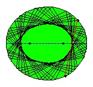

Ergodic theory is a mathematical theory that evolved out of the study of global properties of dynamical systems. Here, we speak loosely of a $\textbf{dynamical system}$ as consisting of a $\textbf{phase space}$ $\Omega$ (a set, whose points are the possible states of the system) together with some $\textbf{dynamics}$, which are a notion of how the state of the system evolves over time. Time may flow continuously or in discrete steps. In the simplest case of discrete-time dynamics, the dynamics are encapsulated by a mapping $T:\Omega\to \Omega$. We imagine that if at a given time the state of the system is some point $\omega \in \Omega$, then in the next time step it will be $T(\omega)$. (We assume that the dynamics, i.e., the rules of evolution of the system over time, are themselves unchanging over time.)
The description of the dynamics in a continuous-time dynamical system is more subtle; it consists of a family $(T_s)_{s\ge 0}$ of maps, where for each $s\ge 0$, $T_s:\Omega\to \Omega$ takes the current state of the system $\omega\in \Omega$ and returns a new point $\omega'=T_s(\omega)$ which represents the state of the system $s$ time units into the future. The maps therefore have to satisfy the conditions
i.e., the family $(T_s)_{s\ge 0}$ is a transformation semigroup. In a context where the phase space has a differentiable structure and the dynamics are a result of solving a differential equation, the semigroup $(T_s)_{s\ge0}$ is often called a $\textbf{flow}$.
Dynamical systems arise naturally in physics, probability, biology, computer science (algorithmic computations can often be interpreted as discrete-time dynamical systems) and many other areas. To illustrate the types of questions that ergodic theory deals with, consider the example of $\textbf{(mathematical) billiards}$: this is a mathematical idealization of the game of billiards in which a small ball is bouncing around without loss of energy in some bounded and odd-shaped region of the plane, being reflected off the walls; see Figure 3 for two examples. The main question of ergodic theory can be roughly formulated as follows:
If an observer watches the system for a long time, starting from some arbitrary (random) initial state, can the ideal statistics of the system be recovered?
The question is formulated in a deliberately vague way, but the idea behind "ideal statistics" is that they are represented by some probability measure $\mathrm{P}$ on the phase space $\Omega$ (equipped with a suitable measurable structure $\mathcal{F}$) that is compatible with both the way the "arbitrary" initial state of the system is chosen, and with the action of the dynamics of the system (we shall make these ideas more precise soon). The way the observer will try to recover the measure $\mathrm{P}$ is as follows: starting from the initial state $x_0$ one gets a sequence of subsequent states
in the case of a discrete-time system, or a one-parameter family of states
for a continuous-time system (in both the discrete and continuous cases this would be referred to as the orbit of $x_0$ under the dynamics). For a given event $A\in \mathcal{F}$, the observer computes the $\textbf{empirical frequencies}$ of occurrence of $A$ in the orbit, namely
or, in the case of a continuous-time system
One might expect that in a typical situation, the quantity $\mu_A^{(n)}(x_0)$ or its continuous-time analogue $\mu_A^{(s)}(x_0)$ should converge (as $n$ or $s$ tend to infinity) to a limit that is a constant and independent of $x_0$, except possibly for some small set of "badly-behaved" initial states $x_0$. If that is the case, we might denote this limit by $\mathrm{P}(A)$ and say that it represents the "ideal" statistics of the system.
A more general way of recovering the statistics of the system is to look at $\textbf{observables}$, which are measurable functions $f:\Omega\to \mathbb{R}$ on the phase space (an observable is the dynamical systems or physics equivalent term for a random variable, really). For an observable $f$ we can form the $\textbf{ergodic average}$
(or the analogous continuous-time quantity, whose form we leave to the reader to write down), and hope that again the ergodic averages converge to a limit, which is independent of $x_0$ and represents the "ideal" average value of the observable $f$, denoted $\mathbf{E}(f)$ (in physics, usually this would be denoted $\langle f \rangle$). By computing this ideal average for many different observables we can recover all the information on the probability measure $\mathrm{P}$.
One can now ask whether the nice situation described above actually happens in practice. Coming back to the example of billiards, it is easy to see that for some shapes of the billiard "table" one cannot hope to recover any meaningful statistics for the system, for what may be a trivial reason. For example, a rectangular table has the property that the ratio of the absolute values of the horizontal and vertical components of the initial speed of the ball is always preserved (equivalently, the quantity $|\tan(\alpha)|$ where $\alpha$ is the initial angle is preserved). Thus, by observing the trajectory of a single ball we have no hope of recovering any meaningful information on the statistics of the system when started with a ball for which the "invariant" quantity $|\tan(\alpha)|$ is different. In this case we say that the billiard dynamical system on a rectangular domain is $\textbf{non-ergodic}$. Less trivially, an ellipse-shaped billiard can also be shown to be non-ergodic, because of a less obvious geometric invariance property: it can be shown that an orbit will not fill the entire ellipse but will have a non-trivial envelope which is either a smaller ellipse, a hyperbola, a closed polygon or a line (seehttp://cage.ugent.be/~hs/billiards/billiards.html, and Figure 4).


On the other hand, in many cases, such as the domains shown in Figure 3, it can be proved that the nice situation exists, i.e., the billiard is $\textbf{ergodic}$ (we will define later what that actually means). This is related (in a way that is difficult to articulate precisely), to the emergence of a kind of "chaos" -- i.e., the billiard ball trajectories are erratic and irregular rather than forming a nice pattern as in the trivial examples discussed above. When ergodicity holds, the statistics of the system can be recovered from the typical trajectory of a single ball; in the case of billiards, it turns out that these statistics are quite interesting: the underlying measure $\mathrm{P}$ on the phase space (which may be parametrized in terms of three parameters $\phi, \theta, \ell$ --- see the article What is the ergodic theorem? by G.~D.~Birkhoff, American Math. Monthly, April 1942, for the meaning of these quantities) takes the form
Note that even when the system is ergodic, there may be exceptional orbits from which one cannot recover any statistics. For example, in the Bunimovich stadium shown in Figure 3, a trajectory that starts in a vertical direction starting in the rectangular area bounded between the two semi-circles will be a periodic vertical line. However, the key point is that such trajectories are atypical examples that only occur on a measure 0 set of the phase space.
It should also be noted that in any given example, proving that the ergodicity property holds may be extremely difficult. In fact, the family of dynamical systems (and even more restrictively billiard systems) for which ergodicity has been proved rigorously is quite limited, and in practical dynamical systems that one encounters in physics or other applied areas usually this is assumed without proof, as long as there is a sufficiently strong intuition that allows one to rule out a "trivial" reason why ergodicity should fail to hold.
In the next few sections, we shall start developing the basic ideas of ergodic theory in a more formal and precise way. The key concept is of a $\textbf{measure-preserving system}$, which is a probability space together with a $\textbf{measure-preserving map}$ representing the dynamics of the system. The main result we will prove is the fundamental result of ergodic theory, known as $\textbf{Birkhoff's pointwise ergodic theorem}$. It explains precisely the connection between the notion of ergodicity and the ability to "recover the statistics of the system" as illustrated above. We shall also give some important examples and explain why the study of ergodic theory is natural from the point of view of probability theory, since one can consider the Birkhoff ergodic theorem as a powerful generalization of the strong law of large numbers.